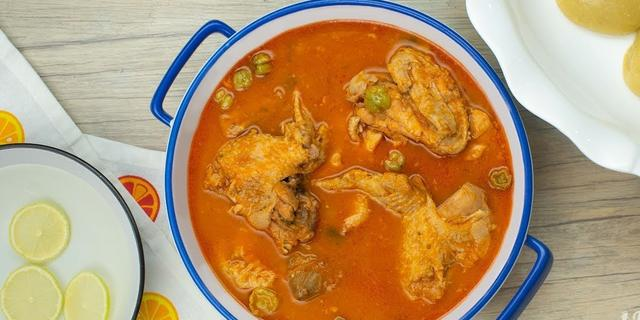

Groundnut Soup

Description
Groundnut (peanut) soup is a Ghanian local dish.
It's mainly made up with groundnut paste, some few vegetables and meat or if you like fish.
Ingredients
- Groundnut paste
- Onions
- Tomatoes or tomato paste
- meat or fish or both if you like.
- Garlic
- Peper
- Ginger
Steps
- Wash the meat and fish to make sure its clean and put them in the pan.
- Blend the onion, peper, ginger and garlic and add it to the meat and fish.
- Put the soup pan on fire, stir the meat and the blended vegetables to make sure it is well steamed.
- While the meat is on fire, dilute the groundnut paste with water.
- After some few minutes, add the diluted groundnut paste and the tomatoes.
- Again, after some few minutes take out the tomatoes, blend it and add it back to the soup.
- Add some salt.